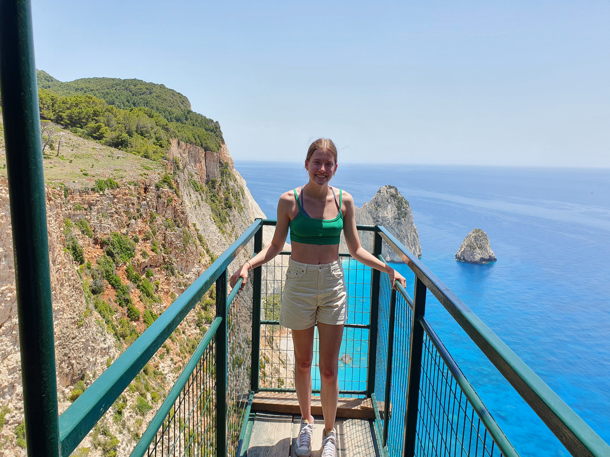
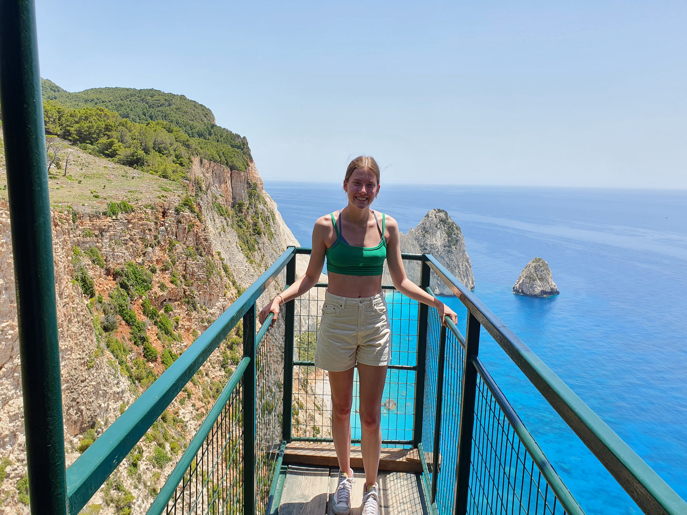
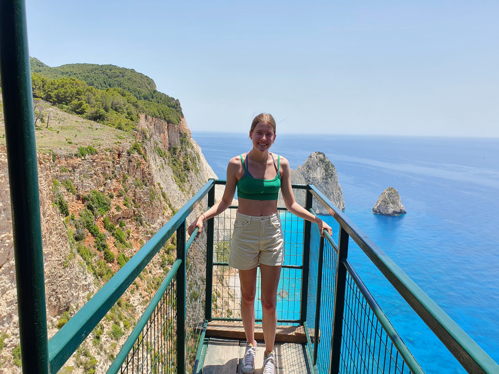

In onze vakantie op Zakynthos hebben we ook voor 2 dagen een auto gehuurd, we hebben daardoor veel van het eiland kunnen zien. Waaronder deze plek; Keri Lighthouse. Ik heb deze plek veel voorbij zien komen op sociale media en toen hebben we besloten om het mooie plaatje ook maar met onze eigen ogen te gaan zien. Het is dus een restaurant in het plaatsje Keri, waar je heel mooi uitzicht hebt en ook nog eens lekker kan eten. Dit restaurant ligt 150 meter boven de Ionische zee en heeft een prachtig uitzicht over de Myzithres en het felblauwe water.
Bij het restaurant zijn veel mooie plekken om foto's te maken met het uitzicht, waaronder de groene houten brug dat over de rand van de rots loopt. Het is wel spannend om daar op te staan aangezien het niet heel stabiel is en je zo de afgrond in kan kijken, maar de foto's die je krijgt zijn het zeker waard. Overal waar je kijkt heb je het mooie uitzicht, er zijn ook veel verschillende plekken om foto's te maken. Toen ik het uitzicht voor de eerste keer zag, vond ik het echt heel bijzonder. Ik had natuurlijk wel al foto's online gezien van deze plek, maar dat het in het echt er nog mooier uitzag dan op de foto's vond ik echt bizar. Het is echt een plek waar je je ogen uit kijkt naar azuurblauwe water. Het restaurant heeft niet alleen het mooie uitzicht maar ook een leuke tuin, met veel groen en het heeft zelfs dieren zoals pauwen, wat ook echt leuk is om te zien. Zelf hebben we ook bij dit plekje gegeten, het is tenslotte ook een restaurant. Zelf had ik een pizza Margeritha en een ginger ale, dat was ook echt lekker. Ik hoorde ook dat het nu verplicht is bij dit restaurant om wat te eten of te drinken en dat je niet alleen maar naar binnen kan lopen voor een mooie foto met het uitzicht.
Het is dus zeker een aanrader als je Zakynthos gaat bezoeken, niet alleen voor het uitzicht maar ook voor het eten.
